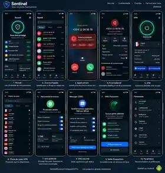

Sentinel est une application Android, pas un système d’exploitation.
Cette matrice sépare les fonctions réellement présentes dans le dépôt, les protections fournies par Android, les options réservées à l’administration d’appareils et les fonctions propres à un OS renforcé. Elle évite d’attribuer à Sentinel des contrôles qu’une application ordinaire ne possède pas.
Projection visuelle de la version Android
Cette maquette sert à montrer la direction produit aux utilisateurs. Elle rassemble les écrans prévus pour la protection mobile, les appels, le Caller ID, le VPN, l’anti-publicité/traceurs, les SMS et la veille d’exposition.

Ce que Sentinel peut réellement faire
| Capacité | Fournisseur réel | État Sentinel | Limite importante |
|---|---|---|---|
| Appels entrants/sortants | ROLE_DIALER + TelecomManager + InCallService | Code testable | Le centre Phone Core demande explicitement le rôle et les permissions. Validation sur appareil/opérateur encore requise. |
| Filtrage d’appels | API Android CallScreeningService + logique Sentinel | Code testable | Activation explicite du rôle Call Screening et validation multi-appareils encore nécessaires. |
| SMS | ROLE_SMS + SmsManager + provider SMS Android | Code testable | Envoi/réception/conversations et multi-SIM sont présents ; décodage complet des pièces jointes MMS encore en validation. |
| Contacts choisis par l’utilisateur | Permission Android READ_CONTACTS | Code déclaré | Consentement explicite requis. Sentinel ne fournit pas les « Contact Scopes » de GrapheneOS. |
| Chiffrement des données de l’application | Android + Keystore/stockage applicatif à concevoir | À auditer | Le chiffrement du téléphone est fourni par l’OS. Le dépôt ne prouve pas encore un sous-système Sentinel complet de clés et données chiffrées. |
| VPN permanent | VpnService + backend WireGuard Android + future passerelle Sentinel | Client présent · passerelle absente | Le client Android est intégré, mais aucun nœud de sortie Sentinel n’est encore provisionné et validé ; aucun état « protégé » ne doit être présenté comme opérationnel en production. |
| Accès Internet, Wi-Fi et Bluetooth | Permissions et API Android | Partiel | Lire ou qualifier un état n’autorise pas Sentinel à renforcer le firmware, la radio ou tout le système. |
Capacités du téléphone ou du système — pas de Sentinel
| Famille | Capacités | Niveau nécessaire | Position Sentinel |
|---|---|---|---|
| Chiffrement et démarrage | Chiffrement par fichiers, état avant premier déverrouillage, Verified Boot, retour arrière des mises à jour | Android, constructeur et firmware | Sentinel en bénéficie si l’appareil les fournit, mais ne les installe ni ne les garantit. |
| Protection physique | Auto-reboot, brouillage du PIN, PIN/mot de passe de contrainte, modes matériels USB-C | OS renforcé ou fonctions constructeur | Hors périmètre d’une application ordinaire. Ne sera pas annoncé comme fonction Sentinel. |
| Durcissement global | Allocateur mémoire durci, marquage mémoire, blocage JIT/code dynamique par application, navigateur système durci | OS, runtime et navigateur | Sentinel peut durcir son propre code, pas imposer ces protections aux autres applications. |
| Permissions étendues | Permission Réseau, permission Capteurs, Storage Scopes, Contact Scopes | Fonctions propres à un OS tel que GrapheneOS | Non fournies par Sentinel. Les permissions Android standard restent applicables. |
| Réseau de l’appareil | MAC aléatoire, Wi-Fi/Bluetooth auto-off, LTE uniquement, DNS privé, blocage hors VPN | Android/OS, réglages utilisateur ou gestion d’appareil | Sentinel pourra guider l’utilisateur ou ouvrir certains réglages, sans prétendre les forcer. |
| Écosystème et profils | Google Play sandboxé, profils utilisateurs isolés, arrêt complet d’un profil | OS et administration de profils | Sentinel reste une application installée dans un profil ; ce n’est pas le gestionnaire du système. |
Feuille de route réaliste
- Avant distribution Android : signer l’APK, publier son checksum, tester l’identification/filtrage d’appels sur plusieurs versions Android et documenter chaque permission.
- Stockage local : inventorier les données sensibles, définir les états verrouillé/déverrouillé, utiliser Android Keystore et ajouter des tests de migration, sauvegarde et suppression.
- VPN : implémenter
VpnServiceavec consentement système, backend WireGuard maintenu, passerelle, provisionnement sécurisé et tests de fuite DNS/IPv4/IPv6. L’état « protégé » ne doit apparaître qu’après établissement réel du tunnel. - Flotte B2B : étudier séparément Android Enterprise/Device Owner pour les politiques administrées. Une application grand public ne doit pas obtenir ces privilèges par défaut.
- Compatibilité OS renforcé : tester Sentinel sur GrapheneOS sans reprendre sa marque ni attribuer ses fonctionnalités à Sentinel.
Références techniques officielles
- Android Open Source Project — chiffrement par fichiers
- Android Developers — Direct Boot
- Android Developers — création d’une application VPN
- Android Enterprise — VPN permanent et administration
- GrapheneOS — fonctions propres au système renforcé
Attribution : auto-reboot 18 h, PIN de contrainte, cinq modes USB-C, Network/Sensors permission, Storage Scopes, Contact Scopes, Google Play sandboxé et Vanadium sont documentés par GrapheneOS. Ils ne sont pas renommés comme fonctionnalités Sentinel.